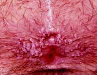
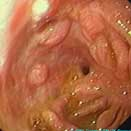
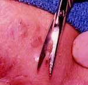

Anal Warts
DEFINITION
AKA Condyloma Acuminatum
D I A B M I M
INCIDENCE
Increased since the 1960s.
Risk
factors
Sailors and whores.
Having a husband who's a milkman.
Lots of sex with lots of partners.
- and not using condoms.
Most pts with anal warts have a history of anal-receptive intercourse
But by no means always associated with sex.
Immune-deficit
Commonly worse in immun-suppressed pts
- eg AIDs, chemo, steroids.
D I A B M I M
AETIOLOGY
HPV.
- 70 types.
- 30 types are genital.
D I A B M I M
BIOLOGICAL BEHAVIOUR
Natural History
Species are site specific (so can't be transferred from a hand to
genitals).
Intact virions invade high turnover epithelium.
Invade through abrasions, through birth, or through fomites.
Giant form
- rare
- termed 'Busheke-Lowenstein disease'
- can invade, fistulise, or associate with verrucous carcinoma and SCC.
Complications
Some types, eg HPV 6 & 11 are associated with benign warts
HPV-16 and 18 are oncogenic, commonly associated with dysplasia and
malignancies.
- see anal SCC
D I A B M I M
MANIFESTATIONS
Symptoms
Warty growth.
Pruritus ani
Bleeding
Pain
Discharge / wetness.

Remember SCC association
Signs
Pinkish-white usually
Pedunculated papilerferous lesions
Vary in size & coalescence
- spread over genitalia / perineum
May extend into anal canal

Common Differentials
Molluscum contagiosum
Secondary syphilis
Enlarged anal papillae.
D I A B M I M
INVESTIGATIONS
Pathology
Histology confirmative
D I A B M I M
MANAGEMENT
Often disappointing
Many proposed, few ideal.
Podophyllin
Cytotoxic to condylomata
Irriative to normal skin.
Limited to minimal disease / extra-anal warts
Do not repeat
- local complications
- potential systemic toxicity
Cheap but often ineffective.
Dichloroacetic acid
Destroys perianal and intra-anal warts
Less irritating.
Surgical excision
Much lower recurrence
Raise lesion by injecting a bleb beneath.
Use small scissors for precision.

Interfern-Beta
Effective but complicated
Cryotherapy.
70% go away.
1/3 of these later relapse.
FAQs
Should I follow them up?
Yes, recurrence is frequent.
D I A B M I M